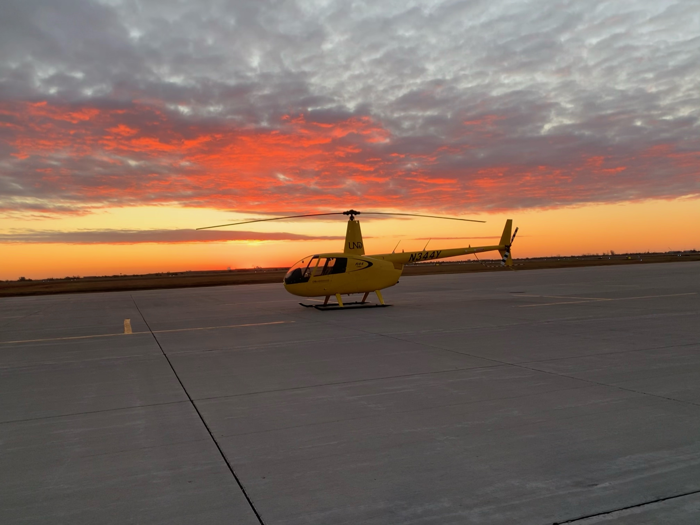
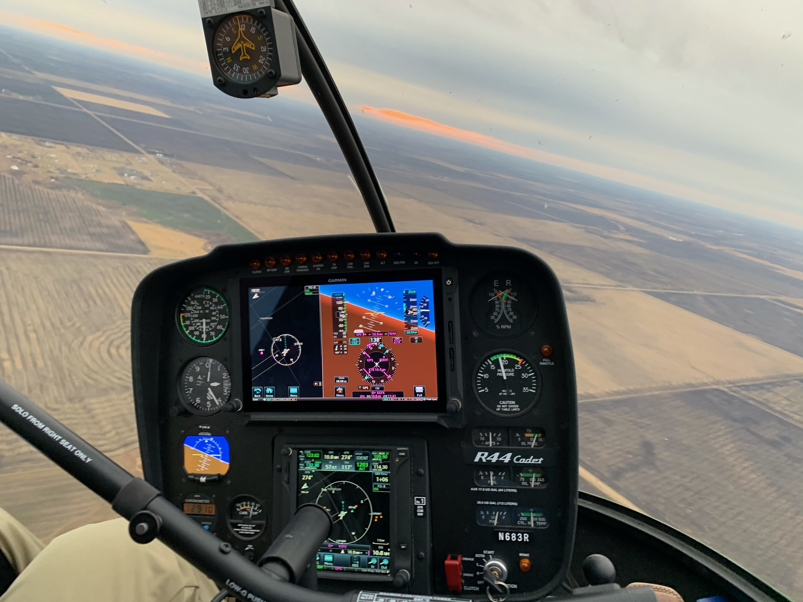

The class I have chosen for this assignment is Aviation 142, The Helicopter Flight Lab. This lab consists of a series of 39 different stages to getting your Rotorcraft Private Pilots License. You can fly up to 3x per week per UND's current guidelines. I'm currently on stage 24 which is the Stage Check, meaning I have to pass this stage in order to fly solo.
There is no set professor for the course but there is my Flight Instructor. My flight instructor graduated from here at UND a couple years back and has been instructing out at the airport since. Generally I will have 2-3 flights out at the airport per week and they almost always end up at 7am on Tuesdays, Thursdays, or Saturdays.
 